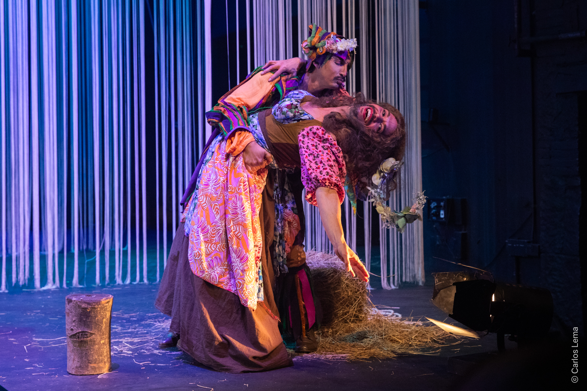
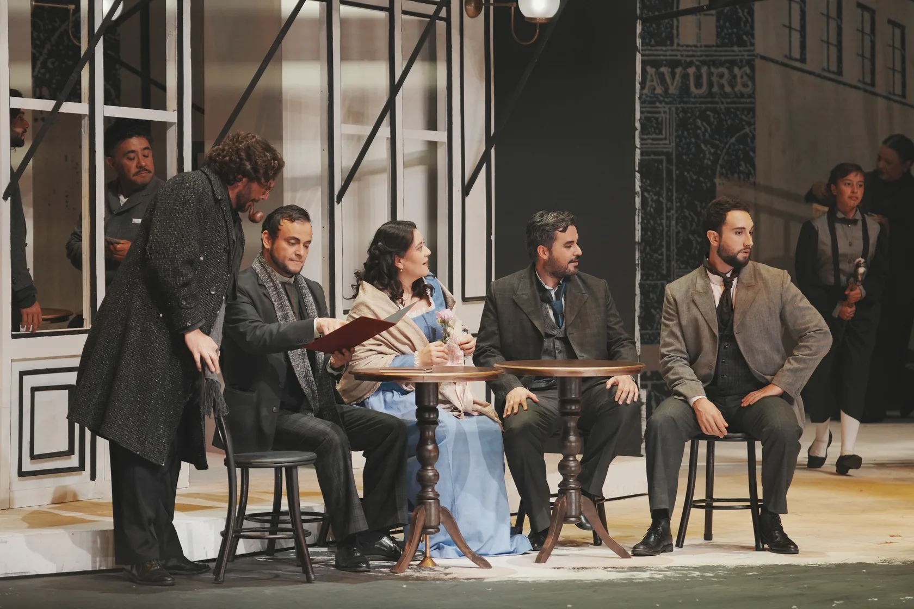
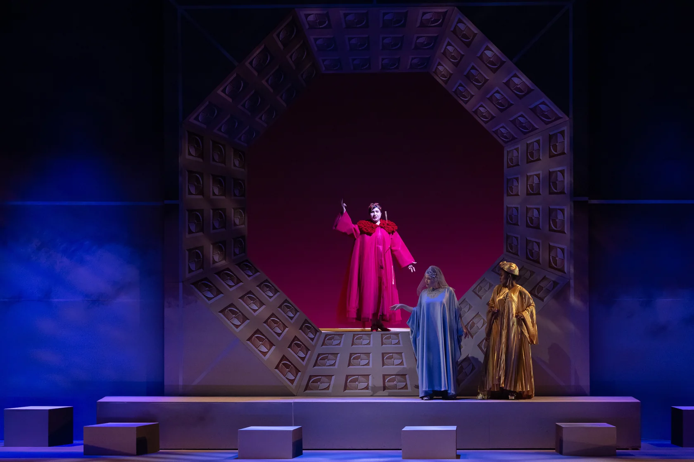
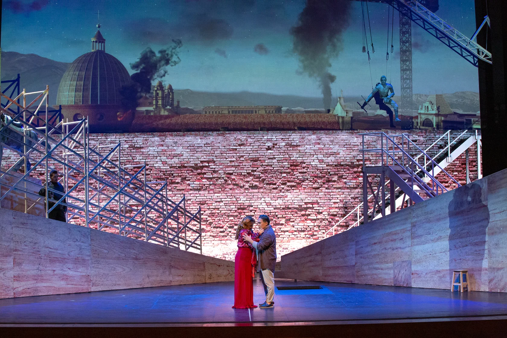
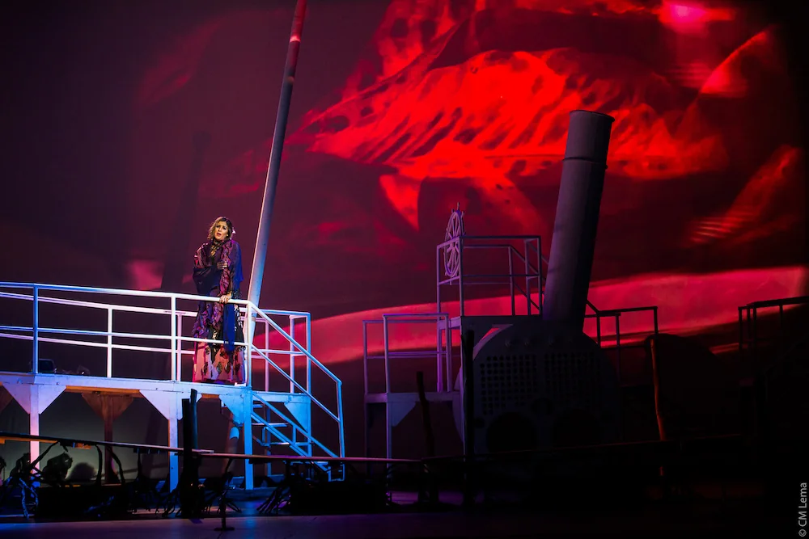
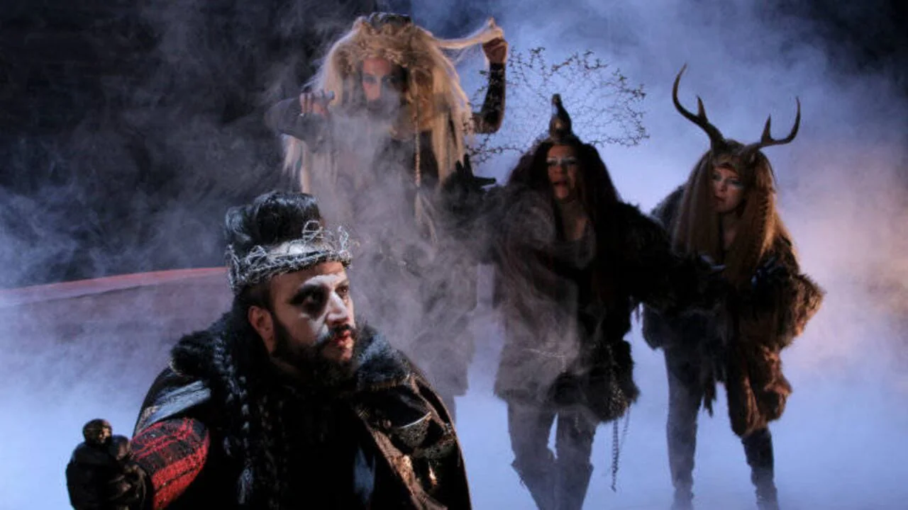
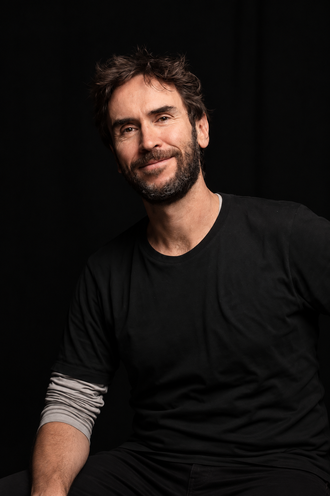

Producción vigente ↗
Como les guste
Teatro · William Shakespeare
Obras clásicas y contemporáneas que viajan entre escenarios, lenguajes y públicos. Teatro y ópera creados desde Bogotá para dialogar con Colombia y Latinoamérica.
Investigación, colaboración y oficio en cada montaje.
Fundada en Bogotá en 2008 por Pedro Salazar y un grupo de artistas, La Compañía Estable produce teatro y ópera para dar continuidad al trabajo escénico en Colombia. Su repertorio reúne obras clásicas y contemporáneas que el equipo aborda desde preguntas actuales y distintas disciplinas.
Ha realizado más de veinte montajes, entre ellos Macbeth, Florencia en el Amazonas, Tosca y La vorágine, junto a teatros y equipos de Colombia y América Latina. Desde 2022 hace parte de OLA —Ópera Latinoamérica—, una red que conecta a los proyectos líricos de la región.
Una lectura vital y contemporánea de Shakespeare. Personajes que cambian de nombre, de ropa y de destino atraviesan un bosque donde el amor se ensaya en todas sus formas.
¿Quiénes podemos ser cuando cambia el mundo que nos rodea?
Fotografías, equipos artísticos y dosieres para recorrer las obras y conocer el trabajo detrás de cada montaje.

Teatro · William Shakespeare

Ópera · Giacomo Puccini

Ópera · João Guilherme Ripper

Ópera · Claudio Monteverdi

Ópera · Giacomo Puccini

Ópera · Daniel Catán

Teatro · William Shakespeare
Conversemos sobre programación, circulación y coproducción. Solicita la disponibilidad de cada montaje y sus necesidades artísticas y técnicas para tu teatro o festival.

Una obra, una pregunta y un equipo. El trabajo de Pedro Salazar conecta la lectura del repertorio con la investigación y el diálogo entre los lenguajes de la escena.
La mirada y la trayectoria ↗Otras miradas sobre lo que sucede en escena. Una selección de artículos, columnas y reseñas.
El Espectador
El Magazín Cultural
Entrevista · 24 febrero 2023
Una conversación sobre Tosca y la mirada del director.
Pedro Salazar conversa sobre Tosca, la lectura del repertorio desde Colombia y la búsqueda de un lenguaje cercano al público.
Leer entrevista (abre en otra pestaña)Los artículos se consultan en la web de cada medio. Algunos pueden requerir suscripción.
Su apoyo hace posibles nuevos encuentros entre las obras, los artistas y el público.
Patrocinador 1 de 2
La escena se construye en compañía.
Aliado 1 de 5
Para programación, coproducciones, prensa o alianzas, conversemos.
Escribir a la compañía ↗